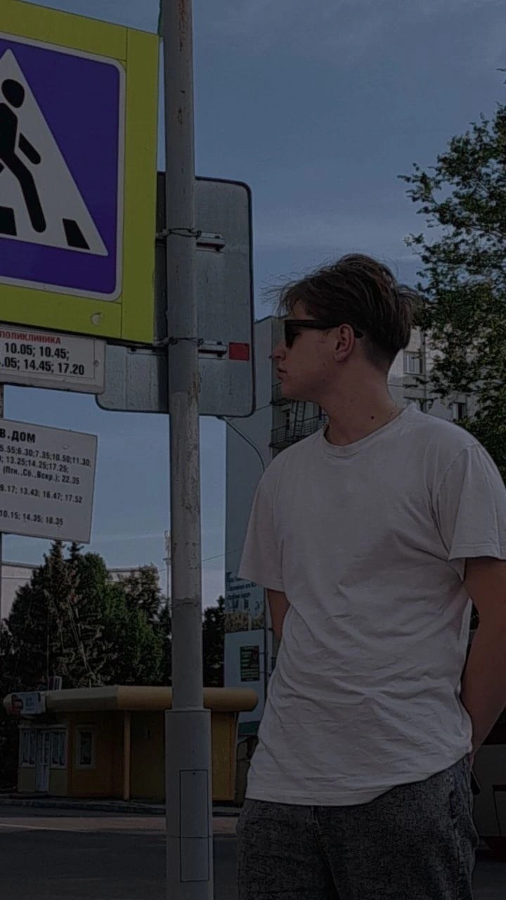
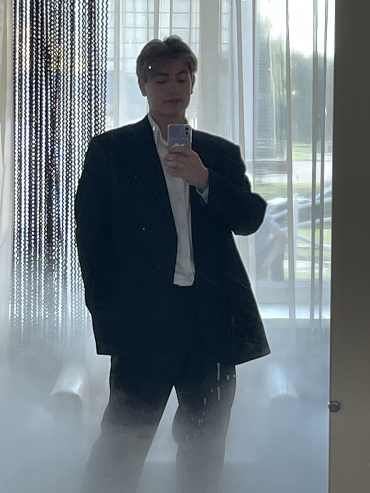
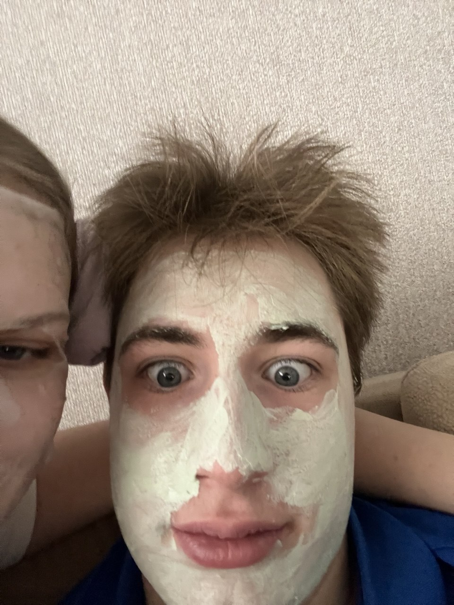

Привет! Я родился 5 октября 2007 года. Я не являюсь фанатом спорта, зато с головой погружен в мир технологий, компьютеров и механизмов.
Меня привлекает создание чего-то нового: от проектирования баз данных в MS Access до разработки концептов промышленных стартапов, таких как аппарат для тестирования металлов MicroStruct-X и система ФерроКлин. Я люблю разбираться в том, как всё устроено изнутри.
Университет: БРУ (Белорусско-Российский университет)
Направление: 20.03.01 Техносферная безопасность
Группа: ТБР-251
Изучаю теоретическую механику, термодинамику, электротехнику и физику, что помогает мне лучше понимать технические процессы.
Отлично разбираюсь в машинах. Изучаю ПДД с помощью ПО ADrive и люблю проводить время в Euro Truck Simulator 2.
Увлекаюсь ролевыми играми в GTA. Развиваю своего персонажа Benito_Santiago и участвую во фракционной жизни на RP-серверах.
Создаю сценарии для коротких видео (TikTok), придумываю комедийные диалоги и разрабатываю графику для аватарок (например, в стиле трейдинга).
Свободное время я ценю не меньше технологий. С 11 октября я встречаюсь с Маргаритой — мы вместе учимся, путешествуем (например, ездили в Минск) и просто отлично проводим время, даже если это совместные косметические маски по вечерам!
